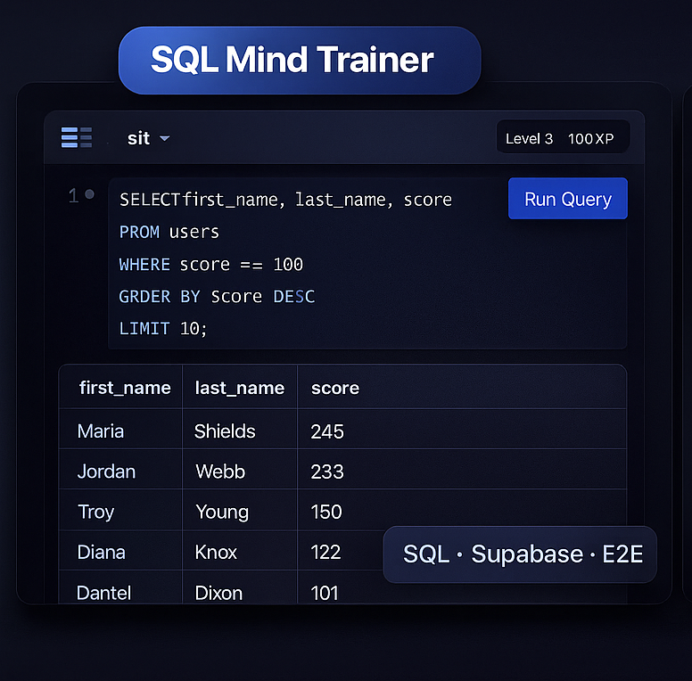
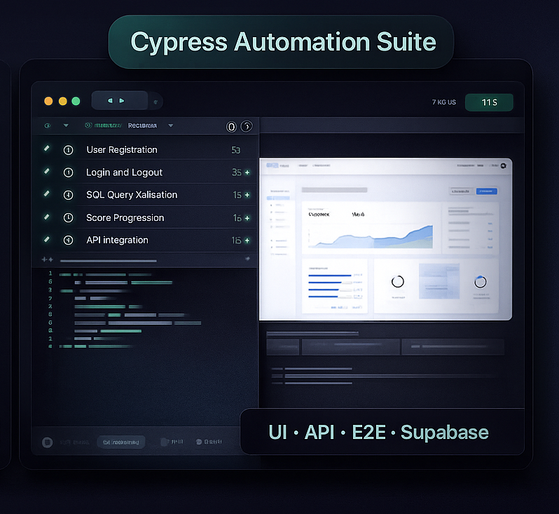

QA Automation Engineer
Especializado en pruebas E2E, API Testing y automatización de flujos críticos.
Cypress
Postman
SQL
Supabase
GitHub
Especializado en pruebas E2E, API Testing y automatización de flujos críticos.
Plataforma creada como entorno controlado para pruebas técnicas sobre SQL, validación de lógica de negocio y flujos de usuario. Utilizada para ejecutar suites reales E2E y API Testing en escenarios de autenticación, niveles, progreso y ranking.

Suite de pruebas desarrollada para validar flujos críticos de la plataforma: autenticación, API Testing, lógica interna, integridad de datos y estados de usuario. Todo ejecutado sobre Supabase + CI.

Habilidades técnicas desarrolladas en proyectos reales de automatización, testing funcional, E2E, API Testing y validación de sistemas basados en datos.
Responsable de diseñar, ejecutar y automatizar estrategias de testing para sistemas de gestión, logística y plataformas web usadas en entornos reales de producción.
Soy QA Automation Engineer con experiencia en el diseño de estrategias de testing, automatización de flujos E2E y validación de APIs en entornos basados en datos. Me especializo en crear pruebas mantenibles, detectar inconsistencias de forma temprana y asegurar la calidad de sistemas que procesan información crítica.
Trabajo con Cypress, Postman, SQL y Supabase para automatizar procesos reales, combinando pruebas funcionales, regresión y análisis técnico. Me enfoco en la eficiencia, la precisión y la comunicación clara dentro del equipo.
Disfruto crear herramientas internas que facilitan el testing —como SQL Mind Trainer—, así como entornos controlados para pruebas complejas. Mi objetivo es aportar calidad, previsibilidad y velocidad a cada release.
Si querés revisar mi trabajo más en detalle o hablar sobre oportunidades, estos son mis canales principales: